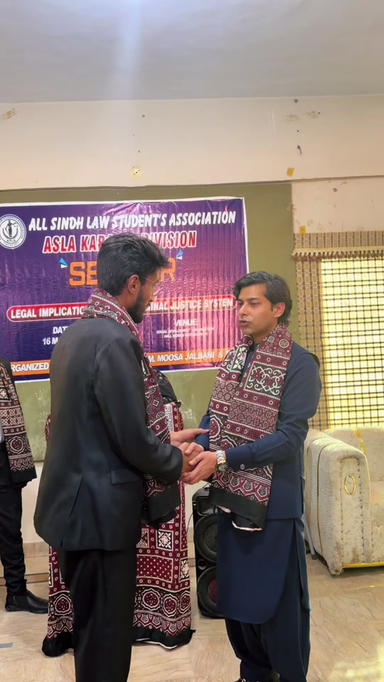

Advocate High Court, Karachi. LL.M Gold Medalist with an accounting background, representing clients in constitutional, banking, corporate and civil litigation before the Sindh High Court.
What we do
From constitutional petitions to banking disputes, every brief is prepared personally, argued on merit and followed through to conclusion.
Petitions and fundamental rights enforcement before the Sindh High Court, challenging unlawful state action and protecting civil liberties.
Banking court litigation, loan recovery and defence, regulatory matters and disputes with financial institutions.
Company matters, contracts, commercial disputes and business advisory for traders, companies and institutions.
Trial and appellate criminal defence, bail matters and white collar crime, handled with meticulous preparation.
Suits, injunctions, appeals and revisions across district and appellate forums in Sindh.
Title disputes, possession, land revenue matters, building and regularization cases.
Divorce, khula, custody, maintenance and inheritance matters handled with discretion and care.
Customs disputes, tax references and tribunal proceedings for importers, exporters and businesses.
Trademark, copyright and IP enforcement for brands and creators.
Service tribunals, employment disputes and departmental proceedings.
Admiralty suits, marine and cargo insurance claims at the Sindh High Court.
Arbitration, adjudication and mediation conducted to international standards, resolving disputes out of court where possible.

About
Barrister Fayaz Ali Metlo is a Partner at Qaiser & Metlo Law Chambers, a Karachi chambers whose members have been involved in leading cases for over four decades. His practice is anchored at the Sindh High Court, with appearances across district courts, banking courts, special courts and tribunals.
An LL.M Gold Medalist with a background in accounting, he brings rare financial fluency to banking, corporate and taxation disputes, reading a balance sheet as confidently as a brief.
Court Record
Selected matters in which Barrister Fayaz Ali Metlo appeared as counsel, as recorded in the published orders of the Sindh High Court, Karachi (caselaw.shc.gov.pk).
Appeared for the petitioner alongside Barrister Sarfaraz Ali Metlo before the Constitutional Bench (Adnan-ul-Karim Memon and Zulfiqar Ali Sangi, JJ.).
Appeared for the petitioner, with Ms. Adeela Ansari, in a petition arising from a raid on a petrol station and recovery of amounts by law enforcement authorities.
Appeared for the petitioner; during the hearing the impugned notice was withdrawn by the respondent and the petition was disposed of as having served its purpose.
Appeared for the appellants in a property matter (Plot FL-I, Block-15, Gulistan-e-Johar, Karachi); the appeal was disposed of with consent, with liberty to approach the trial court.
Appeared for the appellant before the Division Bench (Muhammad Iqbal Kalhoro and Muhammad Osman Ali Hadi, JJ.).
Appeared with M/s. Sarfaraz Ali Metlo and team for the applicant in a customs matter heard over multiple dates before the Sindh High Court.
Appeared for Dubai Islamic Bank Pakistan Limited; the connected matters were disposed of after an amicable settlement between the parties.
Appeared for the plaintiff, seeking release of auction proceeds of a sugar cargo deposited with the Official Assignee.
How it works
A clear, disciplined process, so you always know where your case stands.
Share your documents and facts. You get an honest first assessment of merits, risks and options.
A written roadmap: forum, timeline, evidence and the strongest available remedy for your matter.
Drafting, filing and personal advocacy at every hearing, with updates after each date.
Judgment, settlement or appeal, executed and explained, with certified copies for your record.
Connect
Legal awareness videos, court updates and bar activities, straight from the source.